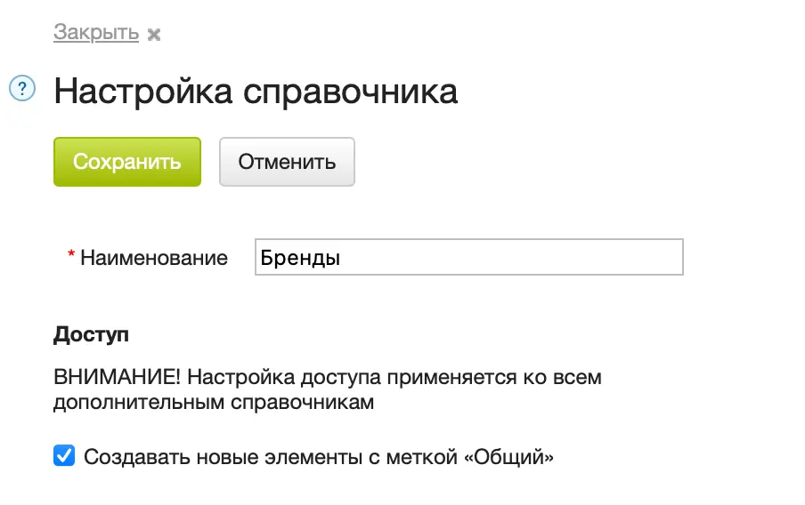
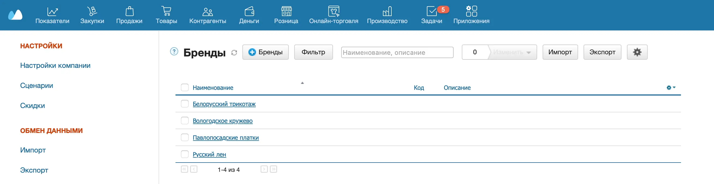
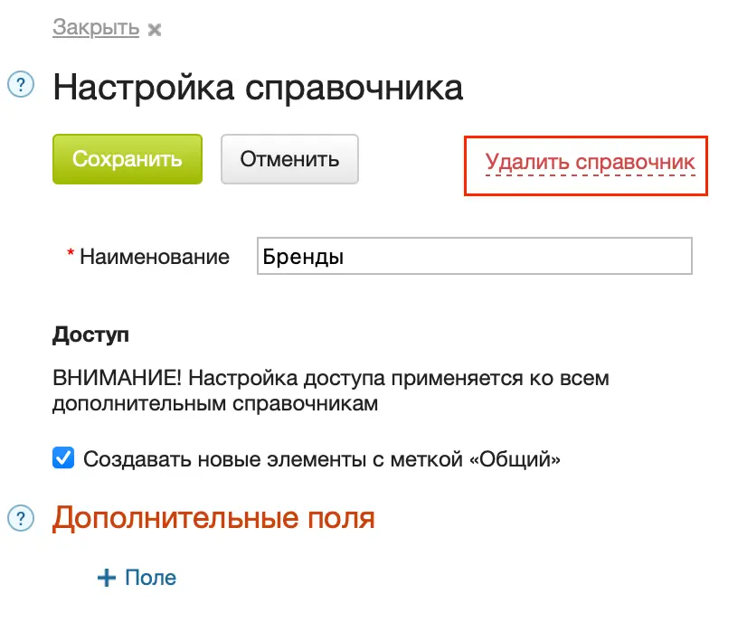

Если для создания дополнительного поля вам требуется отдельный список значений, можно создать дополнительный справочник. Например, чтобы задать список брендов или стоимость доставки в зависимости от региона и города.
Создание дополнительного справочника
- Перейдите в Меню пользователя → Настройки.
- Нажмите кнопку +Справочник в левой части экрана.
- Укажите наименование справочника.
- Нажмите на кнопку Сохранить.

Созданный справочник добавляется в список справочников. Перейдите в Меню пользователя → Настройки и выберите в списке слева этот справочник.

Работа в дополнительном справочнике
В дополнительном справочнике можно:
- добавлять новые элементы;
- редактировать элементы (в том числе массово);
- использовать фильтры;
- импортировать и экспортировать справочник.
Настройка дополнительного справочника
В справочник, созданный вами, можно добавить дополнительные поля. Также справочник можно полностью удалить. Для этого:
- В справочнике нажмите на шестеренку вверху справа.
- В открывшемся окне нажмите Удалить справочник.
